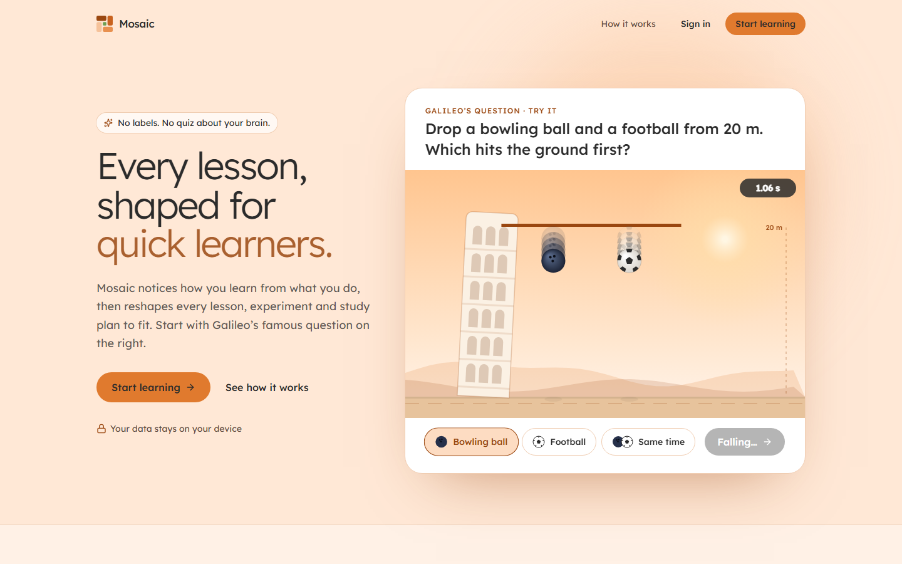
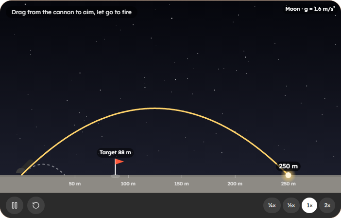
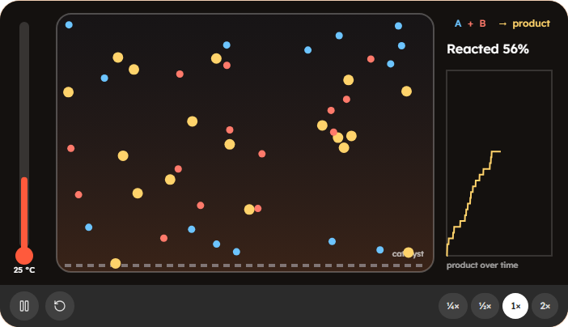
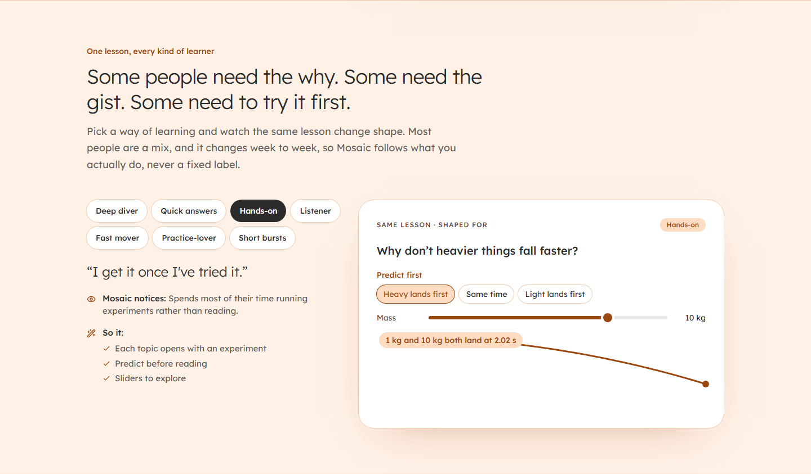
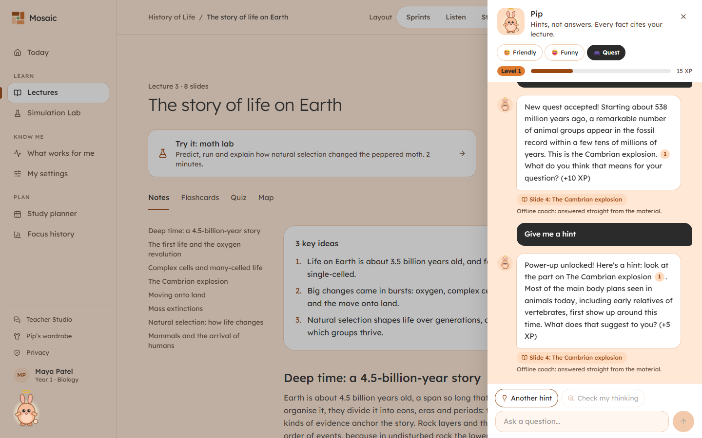
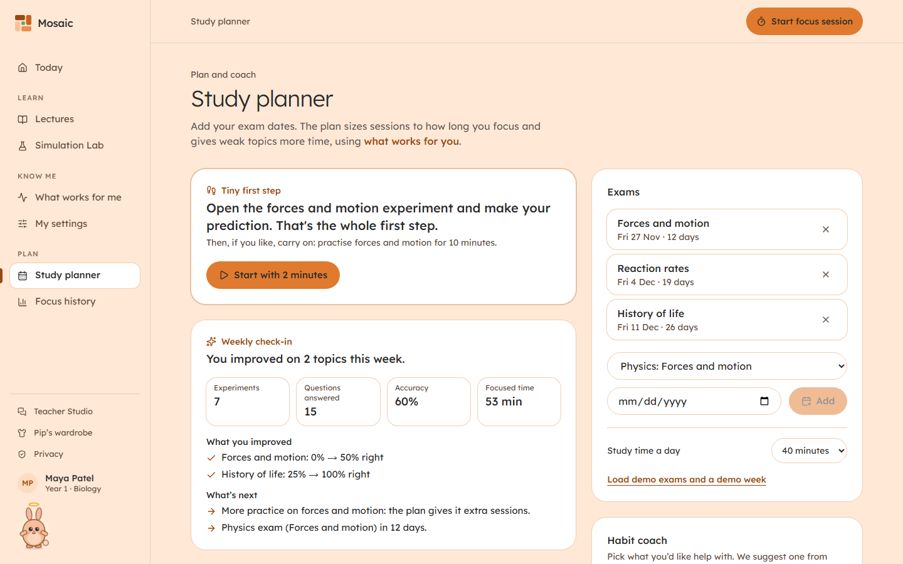
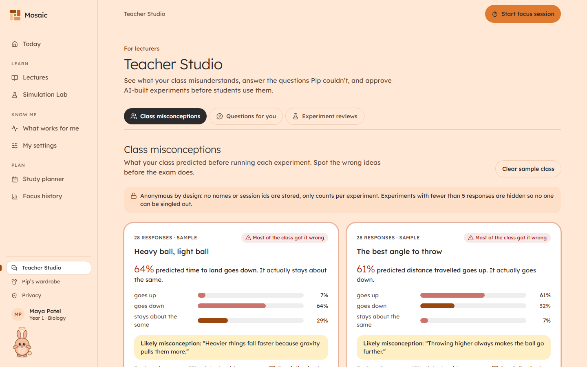
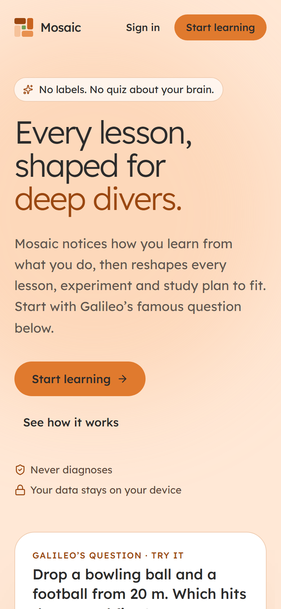

Reply Student Tech Clash 2026 · AI on Campus London
Mosaic teaches by doing, learns how you study from what you actually do, and plans your path to the exam, with teachers kept in the loop.
Mosaic · Abhinav Nair, Ana, Jasmine Barry and team

The problem
And nobody spots a misconception until the exam does.
AI made studying faster, not better: today’s tools summarise your notes, but they don’t teach, they don’t know you, and they can make things up.
Who we designed for
First-year biology · deep diver
“I need the why, at 11pm, without feeling stupid.”
Leaves it late · quick answers
“Just tell me what I don’t know.”
90-minute commute · listener
“Long text takes me ages. Let me hear it.”
Lecturer · 200 students
“I find out what they misunderstood in the exam. Too late.”
The idea
Learns how you study from what you do. No labels.
Experiments, lectures in your shape, and Pip the coach.
Predictions and answers reveal what didn’t click.
Exam plan sized to your focus, weak topics first.
Every answer feeds back into the profile, so the next lesson fits a little better. Teachers see the class, never the child.
Learn by doing
The AI designs the experiment; a tested physics, chemistry or biology engine does the maths and checks the AI’s answer before you see it.


Knows you, without labels
Focus span, skimming, depth, practice and weak topics become your learning mix. Every finding shows its evidence, and you can disagree.
Deep diver
Quick answers
Hands-on
Listener
Fast mover
Practice-lover
Short bursts


Pip, the Socratic coach
Answers only from your lecture and cites the slide
Guides with hints instead of giving the answer
Pauses for your lecturer when it isn’t sure
Friendly, funny or quest mode, with XP
Plans your path
Sessions sized to your real focus span
Extra time on weak topics, review before each exam
A 2-minute first step for when starting is the hard part
Weekly check-in: what improved, what’s next


Teacher Studio · human in the loop
“64% predicted the heavy ball lands first”: fix it before the exam
Counts only; groups under 5 are hidden
Approve, edit or reject every AI-built experiment
Answer, override or resume the questions Pip paused
How it stays trustworthy
Building an experiment
Student question
Input guard: injection blocked
Designer agent writes a spec, never code
Engine verifier: fair test, sends wrong work back
Teacher review (optional gate)
Student runs it
Asking Pip
Student question
Human-review triggers: high stakes, unsure
Retrieval: only the right slides
Coach streams a hint
Output guard: fake citations removed
Reply with sources
No key, or the API is down before an exam? Offline mode: the closest ready-made experiment, and coaching straight from the slides.
How it meets the brief
| The brief asks for | Mosaic |
|---|---|
| Live loop, domain logic, state | Predict, run, explain on tested models; profile → lesson → results → plan |
| Real-time streaming | Pip streams replies; the experiment builder streams each agent step |
| Guardrails | Input guard, slide-grounded answers, engine-checked answer keys, output guard |
| Sessions and API contracts | Per-tab sessions, an agent log, a documented API, 183 unit and 44 browser tests |
| L3 · Multi-agent | Designer → engine verifier → teacher; a coach agent; an MCP server |
| L3 · Dynamic adaptation | Learning patterns reshape explanations, plans and Pip’s replies |
| L3 · Human in the loop | Checkpointed pauses: answer, override or resume; approval for AI experiments |
| Risks named | Data on the device, consent for under-18s, offline mode, no labels |
Mosaic
It teaches by doing, gets to know you, and plans your path, with teachers in the loop.
Live demo now · Abhinav Nair, Ana, Jasmine Barry and team

← → to move · N notes · F fullscreen